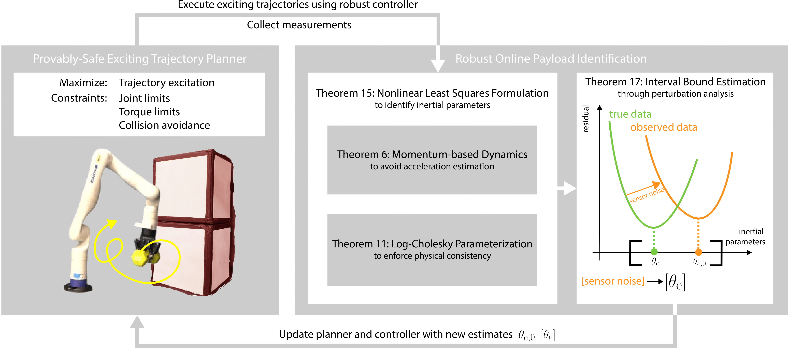

Provably-Safe, Online System Identification
Precise manipulation tasks require accurate knowledge of payload inertial parameters.
Unfortunately, identifying these parameters for unknown payloads while ensuring that the robotic system satisfies its input and state constraints while avoiding collisions with the environment remains a significant challenge.
This paper presents an integrated framework that enables robotic manipulators to safely and automatically identify payload parameters while maintaining operational safety guarantees.
The framework consists of two synergistic components:
(1) an online trajectory planning and control framework that generates provably-safe exciting trajectories for system identification that can be tracked while respecting robot constraints and avoiding obstacles;
(2) a robust system identification method that computes rigorous overapproximative bounds on end-effector inertial parameters assuming bounded sensor noise.
Experimental validation on a robotic manipulator performing challenging tasks with various unknown payloads demonstrates the framework's effectiveness in establishing accurate parameter bounds while maintaining safety throughout the identification process.

This figure summarizes the proposed framework. Initially, the approach assumes an overapproximated bound on the inertial parameters of the robot end-effector with unknown payloads. A trajectory planner (Section V) then generates a provably-safe, locally exciting desired trajectory in real-time based on this initial bound. A robust controller, modified from ARMOUR, tracks this exciting trajectory while collecting robot data including joint positions, velocities, and applied torques. Using this collected data, the robust system identification method (Section IV) generates a new, tighter overapproximated bound on the end-effector inertial parameters. This process iterates continuously, with additional data enabling more precise parameter estimation and improved planner and controller performance.
Links

Full Demo of Experiment (b): Stacking Heavy Unknown Dumbbells
Our method performs identification of the payload inertial parameters online while ensuring that the robot avoids collisions with the environment and respects its input and state constraints. Then the robot follows a predefined trajectory to stack the dumbbells vertically on a specific location.
Experiment (a) and (b): Accurate and Robust Manipulation of a Wide Range of Unknown Payloads
our method on 6lb (2.72kg) dumbbell
our method on 7lb (3.18kg) dumbbell
our method on 8lb (3.63kg) dumbbell
Experiment (c): Accurate and Robust Tracjectory Tracking with Heavy Unknown Payloads for Collision Avoidance
our method
grav-pid-ours: gravity compensated PID controller with identified payload parameters
adap-1-excit: adaptive controller with exciting trajectories
Authors
1 Robotics Institute, University of Michigan, Ann Arbor
This work is developed under RoahmLab.
BibTeX
@article{zhang2025provably,
title={Provably-Safe, Online System Identification},
author={Zhang, Bohao and Zhou, Zichang and Vasudevan, Ram},
journal={arXiv preprint arXiv:2504.21486},
year={2025}
}
Related Projects
RAPTOR - RAPid and Robust Trajectory Optimization for Robotskinova_robust_control - Robust Tracking Controller Under Model Uncertainties for Kinova-Gen3
ARMOUR - Autonomous Robust Manipulation via Optimization with Uncertainty-aware Reachability